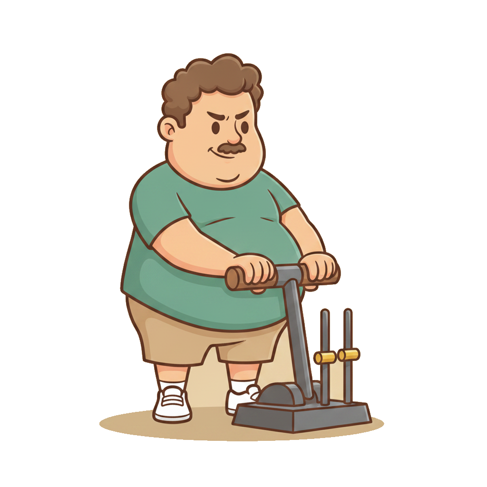
Драйверы роста:
AAARRR-стратегия под чистую прибыль
Как с наименьшими усилиями и максимально быстро влиять на прибыль: найти узкое место, выкрутить одну ручку и собрать под неё рабочий артефакт — за вечер, с ИИ и плейбуками.
 Главный тезис модуля
Главный тезис модуля
Не нужно чинить всё сразу. Нужно найти одну недокрученную ручку — и выкрутить её.
Компания растёт не тогда, когда команда «делает больше», а когда фокус стоит на том рычаге, где сегодня узкое место. Это самый дешёвый и быстрый способ повлиять на чистую прибыль. AAARRR — карта, на которой видно все ручки и видно, какую крутить первой.
 Где мы в программе
Где мы в программе
От моделей и узких мест — к драйверам роста
Это не новая тема с нуля
Предиктивную модель и узкие места вы уже собрали. Сегодня — превращаем их в стратегию роста: какие ручки крутим и на сколько денег.
Итог уходит в OKR
Выбранные драйверы становятся квартальными проектами с ответственным и математикой. Не разовая активность.
 С чем вы выйдете
С чем вы выйдете
Маршрут воркшопа
Драйверы роста и 4 метрики Джея Абрахама
AAARRR — карта пути клиента (6 этапов)
Разбор каждого этапа: рычаги, лайфхаки, сервисы
⚡ Живая сборка артефакта: Revenue
Как выбрать драйвер: бенчмарк · ICE · математика
Технология и работа с Claude + плейбуками
Сборка стратегии → OKR квартала
Домашка: своя AAARRR-стратегия
 Блок 1 · Боль
Блок 1 · Боль
Рост вслепую = масштабирование хаоса
«Когда ты идёшь без выстроенной управленческой рамки масштабировать хоть что-то — ты масштабируешь только кассовые разрывы и хаос.»
Без карты драйверов усилия распыляются: команда «делает много», а прибыль не двигается. Деньги льют в трафик, когда течёт на этапе удержания. Крутят чек, когда узкое место в конверсии.
Симптомы роста вслепую
- Много активностей — мало результата
- «Давайте ещё лидов» при дырявой воронке
- Никто не назначен ответственным за метрику
- Гипотезы не посчитаны в деньгах
4 метрики Джея Абрахама
Это «педали газа» бизнеса. Влияя на любую из них — растёшь быстрее. Как жмёшь на каждую педаль, так и растёшь.
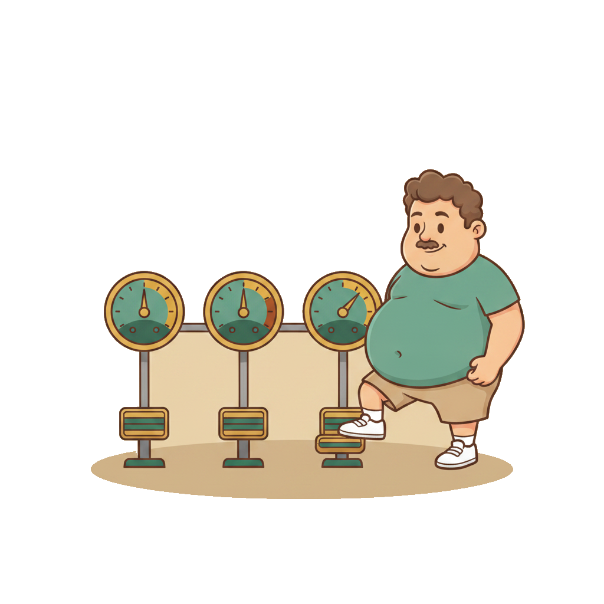
 Блок 1 · Почему без драйверов не растёшь
Блок 1 · Почему без драйверов не растёшь
Интуиция даёт 10%. Фокус — 90%
«Влияние, когда идёт интуиция — это 10%. А когда построен фокус и есть развёрнутые драйверы влияния — это сразу 90% влияния.»
Драйвер — это не «работать усерднее». Это явно названная ручка, метрика при ней, ответственный и цель. Тогда ей можно управлять.
 Блок 1 · Сила одной ручки
Блок 1 · Сила одной ручки
600 млн за год — на одной педали
Компания сделала 600 млн ₽ за год — без роста бюджета на маркетинг и без роста команды. Единственный рычаг — средний чек через управление долей тарифов.
Есть дорогой / средний / минимальный тариф. Если не фокусировать команду, какой продаём в первую очередь — средний чек падает, а с ним выручка. Сфокусировали — выросли.
AAARRR — путь клиента целиком
«Пиратский маркетинг» Дэйва МакКлюра — 360°-стратегия, которая разбивает весь путь клиента на 6 этапов. У каждого — своя метрика и своя ручка роста.
Узнал → пришёл → активировался → остался → заплатил больше → привёл других. Все 4 педали Абрахама живут внутри этих этапов.
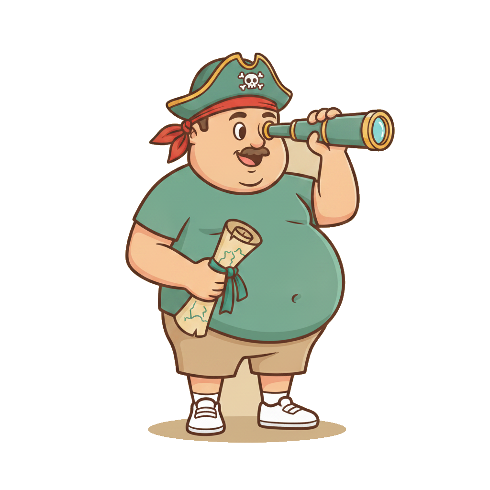
Сначала затыкаем дно
Читаем воронку справа налево. Лить трафик в дырявое ведро дороже, чем заткнуть дно. Сначала Retention / Revenue / Referral — потом Acquisition / Awareness.
- Retention — удержание в 5–7 раз дешевле привлечения
- Revenue — больше денег с клиента, которого уже привёл
- Referral — нулевой CAC, клиенты приводят клиентов
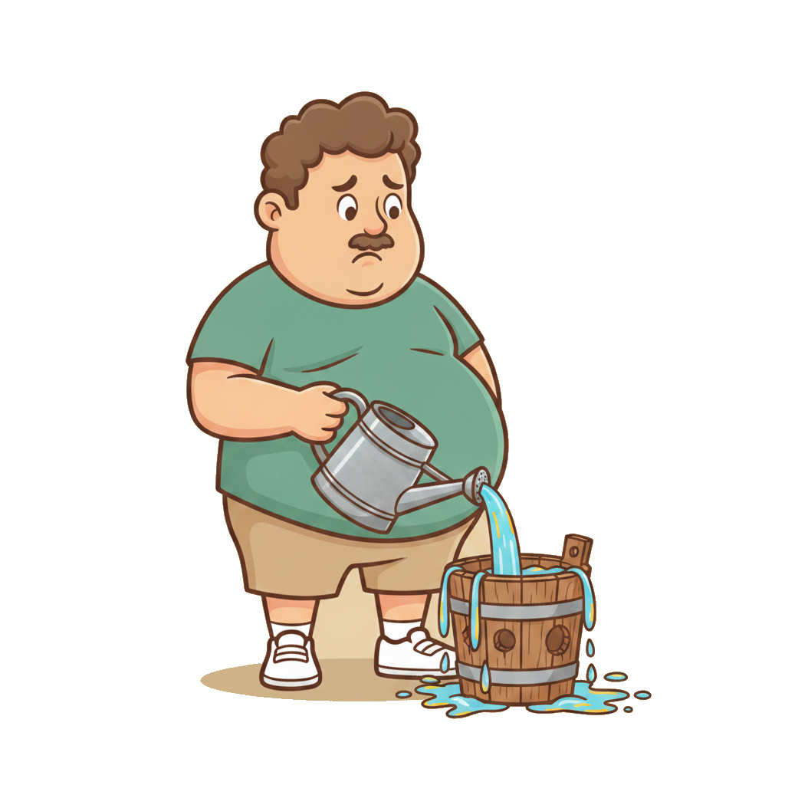
Блок 2 · Как это работает на практике
3 воронки, которые собирают AAARRR
Охватная
Первые касания, лидген. Awareness + Acquisition. Задача — попасть в поле зрения и привести.
Прогрева («парник»)
Борьба за внимание. Чат-бот, CRM, рассылки. Activation. Довести до первой ценности.
Обратная
Возврат, апселл, рекомендации. Retention + Revenue + Referral. Больше денег и новых клиентов.
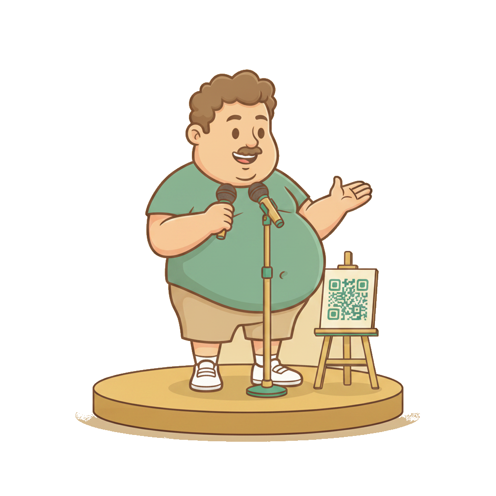
📣 Awareness — узнаваемость
Миссия: чтобы ЦА знала о тебе и приходила сама с готовым запросом — без холодного убеждения.
Ключевые KPI
Топ-рычаги
- Личный бренд основателя — главный недооценённый канал в B2B/экспертке
- Выступления со встроенной механикой — диагностика по QR, один CTA
- PR без бюджета — Pressfeed, гостевые статьи, подкасты как гость
- Контент по «правилу 2 часов» — 40% экспертный / 30% обучающий / 20% соц.док / 10% личное
Awareness на практике
Лайфхаки
- Выступление с диагностикой по QR даёт 25–35% зала в заявки против 2–5%
- Перед покупкой на 50К+ человек должен «потребить» ~2 часа твоего контента
- Один ответственный за охват — как за KPI («делают все = не делает никто»)
Сервисы
Лучшие лиды (чек 400К) приходят с офлайн-конференций. Вместо 5 соцсетей эксперт выкручивает 2 канала: 20+ выступлений в год с диагностикой по QR + Telegram с разборами кейсов (3–4 поста/нед).
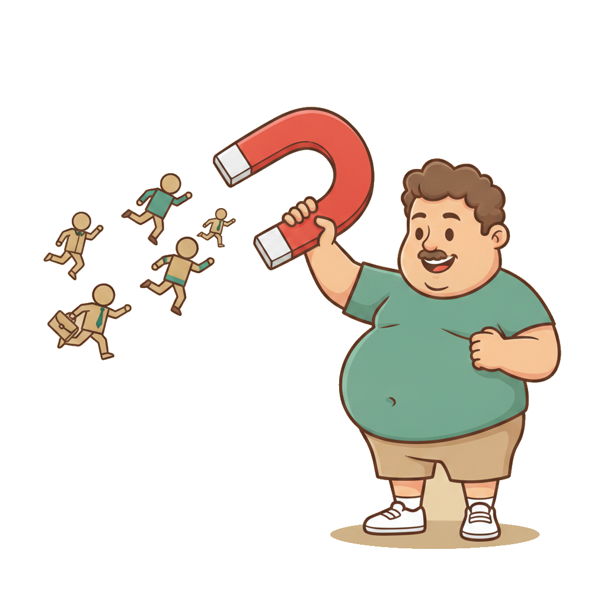
🎯 Acquisition — привлечение
Миссия: получать не просто лидов, а квалифицированных — с предсказуемой стоимостью и качеством.
Юнит-экономика (ориентир)
Топ-рычаги
- Партнёрские каналы — приоритет №1: «отходы» чужих бизнесов, сообщества (конвертят в 2–4 раза лучше)
- Лид-магнит: диагностика/тест (конв. 25–40%), чек-лист, экспресс-аудит
- Платный трафик — только для масштабирования уже проверенной связки
- SLA скорости: горячий лид — до 5 минут
Acquisition на практике
Лайфхаки
- Партнёрский лид ≈ «отход» чужого бизнеса: HR-агентство отказало кандидату → ты продал обучение
- Горячий лид через 30 минут конвертит в 2–3 раза хуже — ставь дежурство
- Ретаргетинг возвращает в 3–5 раз дешевле нового лида
Сервисы
Вместо дорогого таргета — партнёрство с 8 клиниками и 2 гериатрическими центрами по CPA 1 500 ₽ за оформленную заявку: направляют выписанных пациентов на послеоперационный уход.
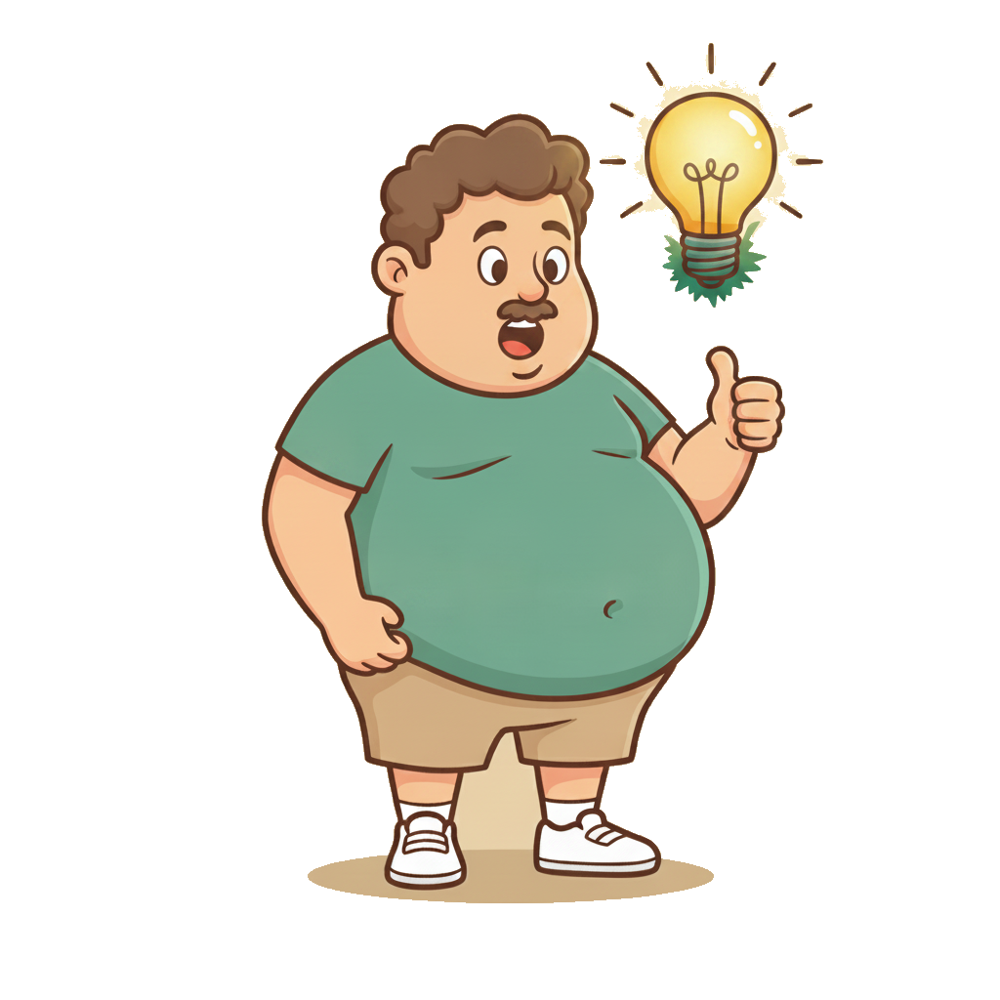
⚡ Activation — активация + КЭВ
Миссия: провести лида через aha-момент и довести до первой покупки. Здесь ломается большинство воронок: «лиды есть, а продаж нет».
КЭВ — ключевой этап воронки (чек 30К+)
70% времени говорит клиент. Конверсия: базовый 10–20% → максимальный 35–50%+
Топ-рычаги
- Найти aha-момент кастдевом 10–15 лучших клиентов и сократить Time to Value вдвое
- 3 параллельные воронки: охват + прогрев + конвертер (КЭВ)
- Борьба с no-show: 3 напоминания (24ч / 2ч / 15 мин) снижают срыв с 30–50% до 10–15%
- Прогревающая цепочка 7+ касаний по дням
Activation на практике
Лайфхаки
- Вопрос для кастдева: «в какой момент вы поняли, что точно будете работать с нами?» — это и есть aha
- КЭВ должен быть ранним: горячий лид остывает, если встреча через неделю
- Follow-up-резюме встречи в течение 15 минут повышает конверсию
Сервисы
Кастдев показал: клиенты «загораются», когда система за 20 минут импортирует их реальные остатки и показывает первую сводку расхождений — вот aha. Демо переверстали, чтобы дойти до неё на встрече (Time to Value с 4 дней → 25 минут) + 3 напоминания.
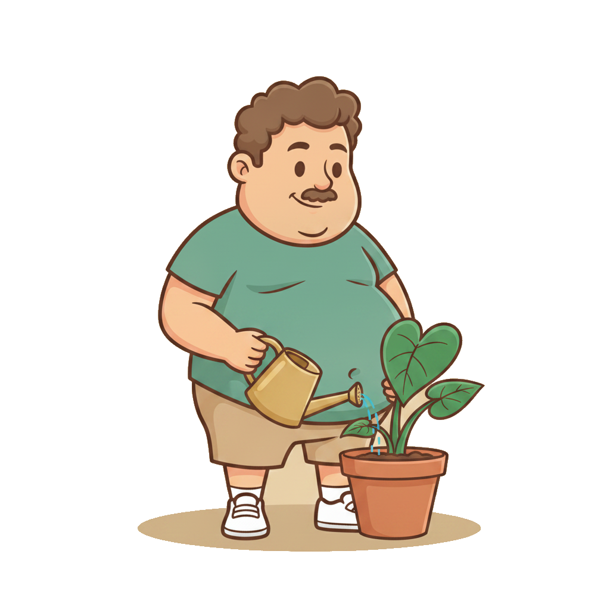
🔄 Retention — удержание
Миссия: чтобы клиент хотел остаться сам — покупал снова, больше и приводил других.
Экономика удержания
- Привлечение нового в 5–7 раз дороже удержания
- Retention +5% → прибыль +25–95%
- Продать существующему: 60–70% vs 5–20% новому
Топ-рычаги
- Customer Journey Map: найти «момент максимального счастья» и «точку риска»
- Health Score 🟢🟡🔴 по сигналам (падение активности, молчание 5–7 дней)
- Правило «не >2 недель без касания»: ценность, check-in, QBR, renewal
- NPS с реакцией на каждый ответ + win-back через 60–90 дней
Retention на практике
Лайфхаки
- Продукт удержания может быть некоммерческим: пятничный дайджест, привычка-касание
- Health Score — светофор по клиенту: реагируй ДО оттока, а не после
- Upsell/cross-sell — только ПОСЛЕ первого результата клиента
Сервисы
Клуб на 300 участников (членство 120К/год) видит churn на продлении 30%. Вводят Health Score: не был на встречах 3 недели и молчит в чате → куратор звонит за 24ч. + онбординг первых 90 дней (знакомство с 5 «нужными» людьми) + разговор о продлении за 45 дней.
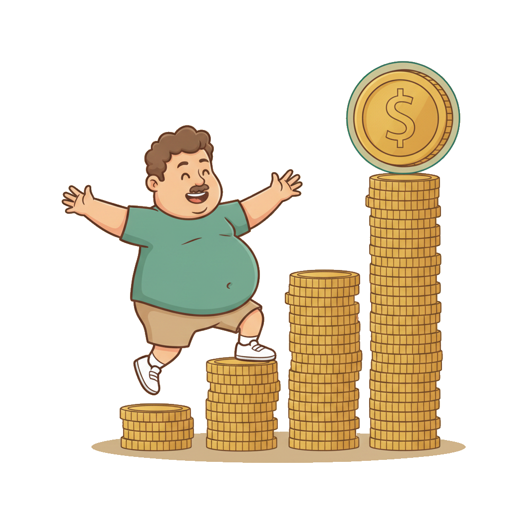
💰 Revenue — монетизация
Миссия: зарабатывать с одного клиента больше — без привлечения новых лидов. Самый прямой рычаг на чистую прибыль.
Топ-рычаги
- Продуктовая лестница: трипваер → core → upsell → High-Ticket
- High-Ticket (чек ×3–10): 5–15% базы готовы платить больше
- Good-Better-Best: 70% берут средний тариф, 20% верхний
Психология цены
- Конкретная цифра (97 000 вместо 100 000)
- Цена через потери и через ROI
- Декомпозиция (833 ₽ в день)
Revenue на практике
Лайфхаки
- High-Ticket тестируется за 2 недели: оффер на 1 экране → 3–5 лучшим клиентам; купил хотя бы 1 → масштабируй
- Апселл в момент оплаты (карта уже в руках) конвертит лучше всего
- РБК «Магазин исследований» + JTBD в Claude → гипотезы монетизации
Сервисы
Средний чек 3 200 ₽, всё транзакционно. Строят лестницу: bundle «набор для кухни» на кассе (−15%), cross-sell аксессуаров, годовая клубная подписка на доставку как ценовой якорь «Premium».
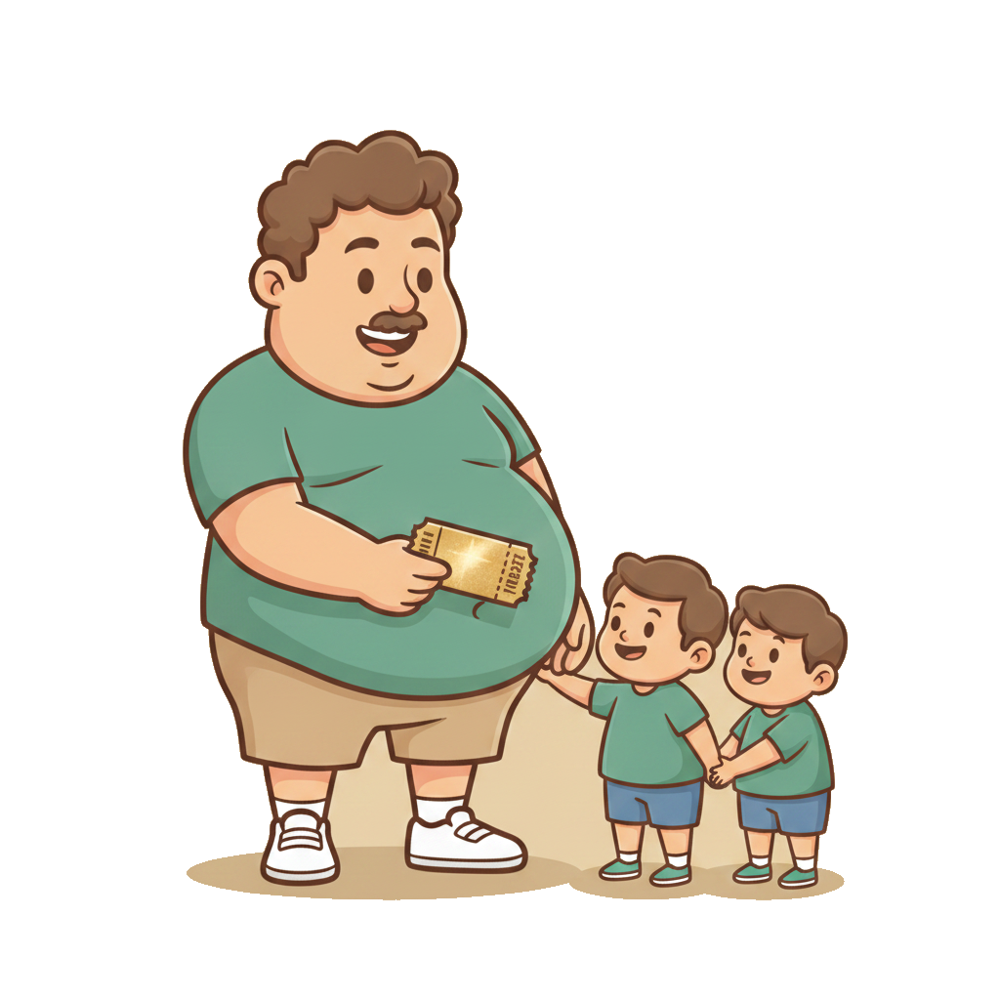
🤝 Referral — рекомендации
Миссия: превратить довольных клиентов в источник новых — с нулевым CAC.
Экономика реферала
- CAC в 3–5 раз ниже платных каналов
- Конверсия в 3–4 раза выше холодного
- Retention +37%, LTV +16–25%
Яндекс.Практикум: 53% продаж — через рефералов.
Топ-рычаги
- «Момент максимального счастья» — просить в пике эмоции, а не когда удобно тебе
- Двусторонняя награда — и рефереру, и приглашённому; объясняется за 10 секунд
- WOW-механики без программы — нейро-фото, именной сертификат, публичный кейс
- Автотриггеры: NPS 9–10 → авто-ссылка; выплата за 48ч
Referral на практике
Лайфхаки
- Найди момент счастья кастдевом: «когда в работе с нами тебе было лучше всего?»
- WOW-артефакт (нейро-портрет в момент результата) поднимает конверсию в отзыв+реферал до 50%
- Кейсы с цифрами и именами — топливо для рекомендаций
Сервисы
Момент счастья — когда пациент восстановился и семья впервые спокойно спит. Координатор шлёт: «Рады, что маме лучше! Порекомендуете — знакомому первый визит −20%, а вам 2 000 ₽ на баланс» + кейс с именем медсестры. Выплата за 48ч.
 Сквозной принцип всех этапов
Сквозной принцип всех этапов
«Выкрутить ручку» = поднять планку, а не начать с нуля
На каждом этапе есть 3 уровня требовательности. Рост — это переход на следующий уровень того, что уже работает.
Конверсия КЭВ 10–20%
Встреча идёт «как получится», без структуры и подготовки
Конверсия 25–35%
Есть структура КЭВ, напоминания, follow-up, сегментация
Конверсия 35–50%+
Aha до оффера, кастдев-настройка, разбор записей, ОКК
 ⚡ Живая сборка артефакта
⚡ Живая сборка артефакта
Собираем Revenue-стратегию
прямо сейчас
Берём выдуманный, но конкретный кейс — сервис медсестёр на дом «Забота» — и на глазах превращаем предиктивную модель + плейбук + Claude в артефакт с математикой в рублях.
Живая сборка · Шаг 1 — где узкое место
Читаем предиктивную модель «Заботы»
Что показывает модель
- Awareness/Acquisition — партнёрство с клиниками уже работает, лиды есть
- Activation — конверсия в первый визит нормальная
- Revenue — всё разовое: нет лестницы, нет High-Ticket, ARPU низкий
Живая сборка · Шаг 2 — что кладём на вход
Топливо у вас уже собрано
Всё, что вы делали в прошлых модулях, теперь становится входом для стратегии. Ничего собирать заново.
Предиктивная модель
Текущий чек, частота, LTV — «точка А» в цифрах
Узкое место в ₽
Revenue: сколько денег лежит в недокрученной ручке
JTBD-сегменты
Что клиент «нанимает» сделать: семьи после операции, патронаж пожилых, клиники
Отраслевое исследование
РБК «Магазин исследований» — рынок ухода, цены, ниши
Плейбук Revenue
Продуктовая матрица, High-Ticket, ценообразование
Claude
Собирает всё это в стратегию под конкретный бизнес
Живая сборка · Шаг 3 — мастер-промпт
Один промпт — вся стратегия этапа
Живая сборка · Шаг 4 — что выдал Claude
Продуктовая лестница «Заботы»
Живая сборка · Шаг 5 — юнит-экономика вживую
Считаем прирост в рублях
Берём только гипотезу №1 (пакет ухода) — самую быструю — и считаем эффект теста на 2 недели.
Живая сборка · Шаг 6 — приоритет и запуск
ICE → строка в тетради → OKR
| Гипотеза | Impact | Confidence | Easy | ICE | Решение |
|---|---|---|---|---|---|
| Пакет послеоперац. ухода | 9 | 8 | 8 | 25 | 🟢 Тест на 2 недели |
| Абонемент патронажа | 8 | 6 | 6 | 20 | 🟡 Следующий |
| Корп. контракт с клиникой (B2B) | 9 | 5 | 4 | 18 | 🟡 Q2, длинный цикл |
→ Уходит в OKR квартала
O: вырастить ARPU без нового трафика. KR: доля пакетов 30%, +1 млн ₽/мес. Ответственный — руководитель сервиса.
Блок 5 · Как выбрать драйвер доказательно
Бенчмарк вместо ощущений
Какой этап качать — решают не «мне кажется», а разрыв с нормой. Сравни свою воронку с бенчмарками ниши: где отстаёшь сильнее всего — там главная ручка.
Как получить бенчмарк
- Спросить Claude про нормы конверсий/CPL/retention в нише
- Отраслевые исследования (РБК, отчёты рынка)
- Свои исторические данные — динамика по этапам
Что ищем
- Этап с самым большим запасом роста в деньгах
- Не «где плохо вообще», а «где докрутка даст больше ₽»
- Один-два этапа в фокус, остальные — на поддержку
Блок 5 · Шаг 1 тетради
Считаем потенциал каждой ручки в рублях
| Текущий драйвер | Метрика Абрахама | Факт | Реальная цель | Потенциал ₽/мес |
|---|---|---|---|---|
| Конверсия лид → продажа | Конверсия | 3% | 7% | +3 000 000 |
| Средний чек | Средний чек | 90 000 | 145 000 | +5 500 000 |
| Лидогенерация | Лиды | 800 | 1 200 | +1 800 000 |
| LTV / повторные | LTV | 100 000 | 150 000 | +2 500 000 |
Блок 5 · Порядок гипотез
Сначала масштабируем работающее
«Сначала думаешь, за счёт чего масштабировать текущие драйверы, и только потом — потенциальные. Сначала мы учимся увеличивать продажи в том, что уже приносит деньги.»
То, что уже работает → докручиваем ручку. Быстро, дёшево, предсказуемо.
Новые гипотезы/каналы → тестируем и масштабируем. Дольше и рискованнее.
Блок 5 · Шаг 8 тетради
ICE — из десятков гипотез выбираем 3–5
Все гипотезы со всех этапов AAARRR собираем в одну таблицу и ранжируем:
Блок 5 · Шаг 9 тетради
Математика гипотез — каждая в рублях
| Драйвер | Формула | Пример |
|---|---|---|
| Рост конверсии | (нов% − тек%) × лидов × чек | (7%−3%) × 1000 × 75 000 = 3,0 млн/мес |
| Рост чека | (нов − тек) × продаж/мес | (145 000 − 90 000) × 100 = 5,5 млн/мес |
| Рост лидов | (нов − тек) × конв% × чек | (1200 − 800) × 5% × 90 000 = 1,8 млн/мес |
| Рост LTV | (нов − тек) × новых клиентов | (150 000 − 100 000) × 50 = 2,5 млн/мес |
Мы собираем технологию компании
«Мы создаём технологию, по которой работает наша компания». Как в McDonald's: весь путь клиента разбит на пронумерованные узлы, за каждым — плейбук.
«Эффект Икеи»: детские рисунки-инструкции, по которым понятно, как собирать. Так же надо оцифровать коммерцию — чтобы результат не зависел от «звёздного» сотрудника.
 Блок 6 · Как работать с ИИ
Блок 6 · Как работать с ИИ
Claude + плейбуки этапов = стратегия под ваш бизнес
Роль
Задаём Claude экспертную персону: «бренд-стратег 15 лет», «директор по монетизации» — под этап.
Входы
Бриф, JTBD, ToV, конкуренты, предиктивная модель + плейбук этапа.
Выход
North Star + KPI, тактики/каналы, эксперимент на 2 недели, юнит-экономика, строка в таблице.
Блок 6 · Алгоритм
Быстрый старт за вечер (~2 часа)
Блок 6 · Куда это приземляется
Драйверы живут в модели отдела продаж
Метрики каждого этапа AAARRR должны отражаться в предиктивной модели и модели ОП — иначе драйвером нельзя управлять ежедневно.
Что приземляем
- Опережающие: звонки, наговор, дозвон
- Воронка: лиды → квал → КЭВ → оплата
- Средний чек через долю тарифов
Детали — в модуле «Арсенал продавца»
- Интерфейс контроля менеджеров (M1/M2/M3)
- Скрипты, регламент дозвона, ОКК
- Боевой план и нормирование
Один экран, который вы защищаете
 Блок 7 · Сшивка
Блок 7 · Сшивка
Драйверы становятся квартальными проектами
Каждый выбранный драйвер = Objective + Key Results с ответственным. Не разовая стратсессия, а проект, который человек лидирует и по которому оценивается его перформанс.
Домашнее задание
Собери свою AAARRR-стратегию
Главный результат модуля — заполненная рабочая тетрадь «Драйверы роста». Проходишь Шаги 0→10 последовательно, на выходе — стратегия с математикой в рублях.
Что сдаёшь
- Оцифрованная AAARRR-воронка (факты по этапам)
- Текущие драйверы с потенциалом в ₽/мес
- ICE-таблица + математика топ-гипотез
- Итоговый слайд стратегии (Шаг 10)
Рабочая тетрадь
Копируешь себе и заполняешь. Внутри — промпты для Claude и плейбуки по каждому этапу.
Домашка · Шаг 0 — чеклист готовности
Без опорных материалов — шаблон, а не стратегия
Бриф компании
Опросник, надиктован и обработан
JTBD-сегменты
По «работам», не по демографии
Core-сегменты
1–3 с максимальным потенциалом
Конкуренты + отстройка
Где сильны они, где вы
Tone of Voice
Как говорим с клиентом
Позиционирование
Кто мы, для кого, почему мы
Предиктивная модель
План-факт по метрикам
Узкие места в ₽
ТОП-3 с влиянием на выручку
Домашка · навигация по тетради
Пошаговый маршрут: Шаг 0 → 10
Домашка · критерии готовности
Что значит «сделано хорошо»
Критерии
- Каждая ручка посчитана в рублях, не «примерно»
- Выбраны 3–5 драйверов по ICE, а не 20
- У каждого — метрика, ответственный, первый тест на 2 недели
- Итоговый слайд собран в один экран
Формат защиты
Защищаешь стратегию на личной встрече — по итоговому слайду (Шаг 10). Не презентация ради презентации: показываешь узкое место, выбранные драйверы и математику.
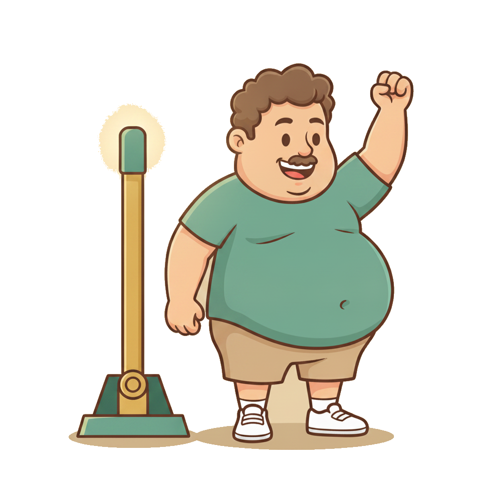
Итог модуляНайди одну ручку —
и выкрути её сегодня
Не чинить всё сразу. Найти узкое место, посчитать его в рублях, собрать под него артефакт за вечер и запустить тест на 2 недели. Так растёт чистая прибыль — с наименьшими усилиями.